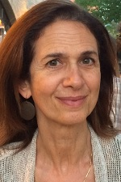
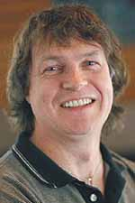

M.A. | PhD
Literacy Education
One of the strongest programs in the country, our faculty are leading scholars in the areas of children’s and adolescent literature, critical literacy, English education, reading, and writing.
Priority deadline: December 1

Our impact
Transforming through research
Serving as presidents of literacy organizations, journal editors, committee chairs and executive board members for organizations such as NCTE, IRA, and NRC and program chairs for conferences, our faculty oversee numerous research projects, serving as project directors for federal grants, and they are authors of important journal articles, books, and materials for scholars as well as K-12 teachers and learners.
Our true strength
Our community
The true strength and heart of our program resides in our former graduate students—who now have positions as literacy educators and researchers all across the country—and our current students, who bring a wealth of ideas and experiences with them to enrich our daily interactions. Our graduates secure careers in university and college teaching, research, curriculum development, and administration of literacy programs. We invite you to become part of this large and extended community!
Faculty advisers
Professor
Deborah Dillon
Literacy practices of teachers + learners in K-12 schools | Role of motivation in engaged reading | Literacy leadership + school reform | Qualitative research methodologies Full profile
Associate Professor
Lori Helman
Literacy development | teaching multilingual learners | teacher development + leadership | assessment + instruction to support aspiring readers. Full profile
Associate Professor
Timothy J. Lensmire
Teaching and learning of writing as a form of democratic living | How white people learn to be white in our white supremacist society. Full profile

Professor
Cynthia Lewis
Critical literacy in urban high schools | Classroom discourse | Identity, and learning | Critical media literacy | Digital media + learning | Adolescent literacy + social identities | Critical discourse | Sociocultural learning theories | Classroom ethnography. Full profile

Professor
David O'Brien
Adolescent literacy | Literacy across disciplines | Digital literacies | Construction of supportive programs for adolescents and struggling adolescent readers | Using literacy across the curriculum | Bridging traditional print literacies with multimodal literacies and new media. Full profile
Associate Professor
Marek Oziewicz
Global and international children’s and YA literature | Speculative fiction, with a focus on fantasy, science ficton and dystopia | Literature-based cognitive modeling for moral education, global citizenship, environmental awareness and justice literacy | Digital and new media literacies | Myth and mythmaking narrative practices in young people’s fiction | Literary education within and outside of the school context. Full profile
Foci
Graduate Study in Literacy Education Includes these complementary foci.
These do not represent different programs of study. Rather, they reflect concentrations of study that students can traverse when they create individual plans of study.
Focus
Literacy, Language
+ Culture
The doctoral specialization in Literacy, Language, and Culture (LLC) focuses on “reading the word and the world,” as Paulo Freire famously put it. By this we mean that our specialization focuses on how reading and writing practices—in and out of school—help us to make meaning, connect with others, take action, contest language ideologies, and transform our worlds.
A critical literacy framework honors the personal and political nature of language use and language learning in schools as well as in family, peer, community and online contexts. We draw on scholarly traditions in literacy, critical and sociocultural theories, multilingual/translingual studies, English Education, and cultural studies to consider how reading, writing, and response to literature and digital media shape and are shaped by race, language, culture, identity, and codes of power.
We believe that culture and identity are at the heart of learning and thus that literacy and language pedagogies must be responsive to learners’ cultures and identities to support equity in learning for all students. Coursework provides both a broad background in relevant theoretic and research literature and opportunities to conduct original studies that explore the nature of literacy practices in a variety of settings.
Focus
Young People's Texts
and New Literacies
Advanced graduate study in Young People’s Texts and New Literacies involves inquiry into the nature of children’s and young adult literature and other texts, and into reading practices, processes, and the engagement involved in understanding these texts.
The focus of this specialization is on the role these texts play in empowering young people to transform a global society and on the potential of young people’s texts across genres and modalities ranging from traditional print formats and genres to multimodal and digital texts.
This program relies heavily on socially and culturally situated research, but also draws on the framework of cognitive science. The study of young people’s texts and engagement with them is especially concerned with issues such as social justice, environmental ethics, and with how children’s texts and new literacies can be used across educational and community settings to nurture activist positions and further the development of an empathic and sustainable global civilization.
Curriculum
M.A students: Select plan A or B
M.A.: Thesis
(Plan A)
- 10 thesis credits
- approximately 450 hours of work
- involves original research in the form of a "mini-dissertation" divided into chapters
- is likely to require human subjects (IRB) approval
- final copy is bound and submitted to the Graduate School
- often pursued by students who intend to pursue a Ph.D.*
*Completing a thesis does not guarantee admission to a Ph.D program, though, if accepted, the thesis can serve as the basis of your dissertation.
Curriculum
31 total credits
Major: (minimum of 15 cr.) At least one seminar in Literacy Education is required.
- CI 8133—Research Methods in Curriculum and Instruction (3 cr.)
- Other credits selected in consultation with an adviser based on previous experience and areas of interest
Minor or related field: (6 cr).
Thesis credits: CI 8777 (10 cr.)
M.A students: Select plan A or B
M.A.: Final paper (Plan B)
- 3 credit "Problems" course
- approximately 120 hours of work
- results in 1 paper, 40-60 pages in length, divided into sections. Or 2 papers, each 20-30 pages
- may or many not involve human subjects (IRB) approval
- final copy is not submitted to the graduate school
- often pursued by students who aren't committed to pursuing a Ph.D.*
*It is possible to complete a final paper and later pursue your Ph.D. You will apply with less research experience, but will still be considered for admission based on the strength of your application.
Curriculum
30 total credits
Major: At least one seminar in Literacy Education is required. Specific courses are selected in consultation with adviser based on previous experience and areas of interest.
Research:
DES 8181—Research Ethics (1 cr.) OR Responsible Conduct of Research (RCR) part 1 & 2 workshops
A minimum of one 3-credit research course selected from list of recommended courses for C&I Plan B students.
CI 8495—Problems: Teaching English and Reading [3 cr. for Plan B paper(s)]
Minor or related field: (6 cr.)
Common Curriculum
PhD
The following courses are required of all PhD students:
- CI 8131 – CI Core: Critical examination of curriculum in context
- CI 8132 – CI Core: Teaching theory and research
- CI 8133 – Research Methods in CI
- CI 8148 – Conducting Qualitative Studies in Educational Contexts
- OLPD 8812 – Qualitative Research in Work and Human Resource Education
- A minimum of 9 semester additional credits in qualitative, quantitative or mixed method
You will also complete:
- 15 credits in your track
- 12 credits from outside your track (if pursuing a minor or supporting program)
Total: 54 course credits + 24 thesis credits = 78
Opportunities
Funding
Support is available in the form of:
- Teaching Assistantships. The majority work as student teaching supervisors for M.Ed. initial licensure students. Daytime availability, a teaching license, and teaching experience are required
- Research Assistantships
- Fellowships. Based on a departmental nomination process. You will be notified by the Director of Graduate Studies if you are being considered for a fellowship
A typical full benefits assistantship (tuition, health insurance + stipend) 20 hours/week at approximately $18/hour. Benefits are pro-rated based on the appointment percentage. Learn more: Graduate assistant pay policies.
Have a complete application in by December 1 to be considered for these positions for the following academic year.
While support is not guaranteed, we make every attempt to financially support full-time students through completion. You may also explore assistantships available outside our department on the University's employment page.
Credit for past work
Transfer credits
M.A. students must complete at least 60% of coursework (not including thesis credits) within our program. PhD students may transfer no more than 15 credits from an outside institution.
A maximum of 12 graduate course credits taken as non-degree seeking or non-admitted status at the University of Minnesota can be transferred--this is counted separately from the maximum 60%, or 15 outside institution credits.
For example, a PhD student could transfer a maximum of 27 credits (15 outside + 12 non-degree from UMN).
If you earned a M.A. at the UMN, please contact the Graduate Studies Coordinator to discuss transfer procedures.
Thesis credits cannot be transferred.
After you are admitted, you will work with your adviser to determine which credits may transfer.
Graduate Studies Coordinator
Kristina Pearon
cigs@umn.edu
Fax: (612) 624.8277
125H Peik Hall
Office hours 8:00 - 3:30